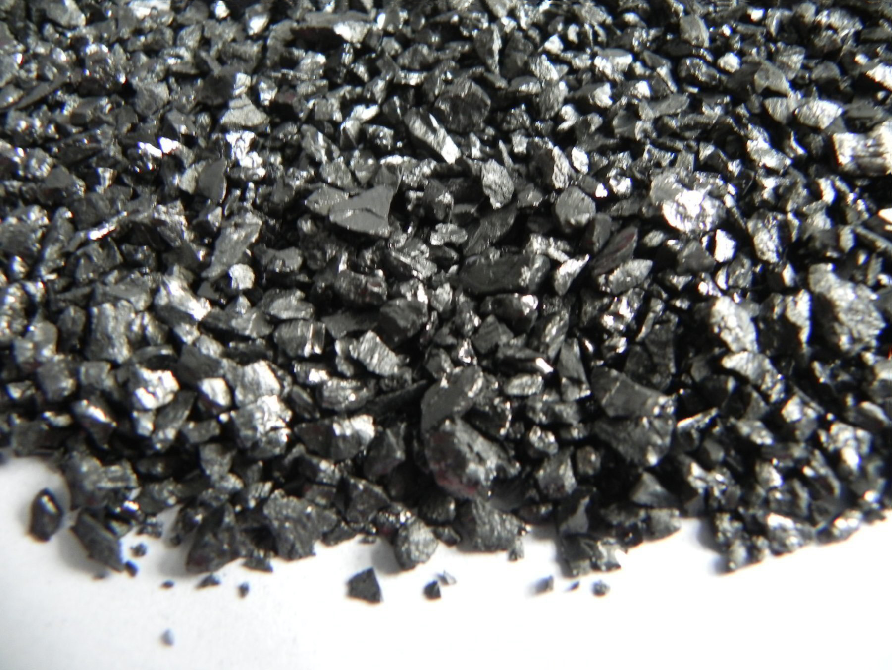
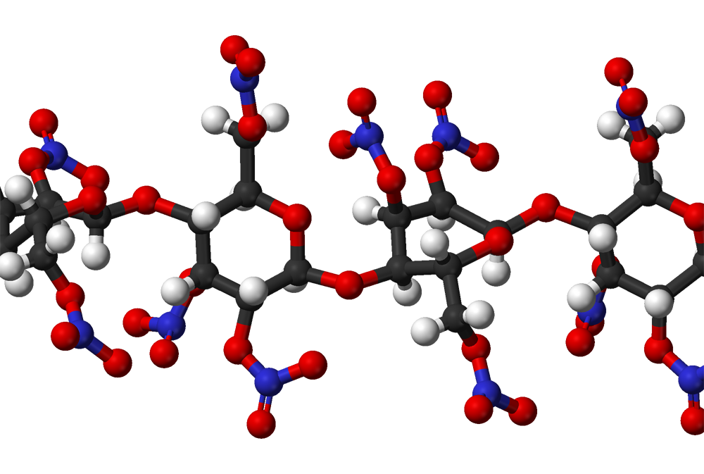

気体の燃焼
可燃物は、その物理的な状態（気体・液体・固体）によって燃え方が異なります。 ここでは可燃性ガスの燃焼を整理します。 可燃性ガスは、空気中である一定の濃度範囲内に混合されていなければ燃焼を起こしません。 この濃度の範囲を燃焼範囲（可燃限界）といいます。
燃焼範囲内のガス混合気をつくる方法には、 燃焼の前に可燃性ガスと空気をあらかじめよく混合しておく方法と、 燃焼の最中に可燃性ガスを噴き出させ、周囲の空気と境界面で混ざりながら燃やす方法の 2つがあります。 前者を予混合燃焼、後者を拡散燃焼といいます。
予混合燃焼では、ガスと空気が最初からよく混ざっているため、 炎が一気に広がって短時間で燃焼が完了します。 そのため、密閉空間では急激な温度・圧力上昇を起こし、爆発につながる危険が大きくなります。
これに対して拡散燃焼は、可燃性ガスが連続して供給される限り、 ガスと空気が混ざる部分でゆっくりと燃焼が進み、炎を持続的に保ちます。 ガスバーナーの炎のように、一定の火炎を保ちながら燃える燃焼形態です。
出る出るポイント
- 可燃性ガスは、燃焼範囲（下限〜上限の濃度）のときだけ燃える。
- 予混合燃焼：燃焼前にガスと空気をよく混合／炎が一気に広がり、爆発の危険が大きい。
- 拡散燃焼：燃焼中にガスが空気と混ざりながら燃える／ガスが続く限り、炎が持続する。
- ガスバーナーの炎は、拡散燃焼の代表例。
液体の燃焼
アルコールやガソリンなどの可燃性液体は、 液体そのものが直接燃えているのではなく、 液面から蒸発してできた可燃性ガス（蒸気）に火がついて燃焼します。 このような燃焼様式を蒸発燃焼といいます。
このため、可燃性液体を扱うときは、液体だけでなく蒸気の管理がとても重要になります。 蒸気の漏えいや滞留を防ぎ、換気を十分に行うなどして、 可燃性蒸気が危険な濃度にならないよう注意しなければなりません。
固体の燃焼
固体状の可燃物の燃焼は、 表面燃焼・分解燃焼・蒸発燃焼の3種類に分類されます。 ここでは、まず表面燃焼について確認します。
表面燃焼とは、可燃性固体が熱分解や蒸発をほとんど伴わず、 そのままの形で空気と接している表面部分だけが直接燃える燃焼形態です。 代表例として木炭、コークス、金属粉などの燃焼が挙げられます。


ひっかけ注意！
コークスやアントラサイトみたいな固体燃料は、 赤熱して表面だけが燃える「表面燃焼」の代表だ。
炎がほとんど立たず、無炎燃焼・無煙燃焼になりやすいから、 問題では「ガス燃焼」「分解燃焼」と取り違えさせるひっかけがよく出る。 コークス＝表面燃焼、アントラサイト＝表面燃焼まで ワンセットで頭に入れておこう。
蒸発燃焼
蒸発燃焼は、可燃性固体を加熱しても すぐには熱分解させず、いったん気化（昇華）させて 発生した蒸気が燃焼する燃焼形態です。 硫黄、ナフタリン（ナフタレン）、固形アルコールなどがこの例に該当します。
しくみとしては液体の蒸発燃焼と同じで、 「固体 → 蒸気 → 蒸気が燃える」という流れになる点がポイントです。
分解燃焼
分解燃焼は、可燃性固体が加熱によって熱分解し、 そこで発生した可燃性ガスが燃焼する現象です。 ふだん目にする炎を上げて燃える燃焼の多くが、この分解燃焼に当たります。
代表例として、木材、石炭、紙、プラスチック類などが挙げられます。
自己燃焼
自己燃焼は、分解燃焼の一種で、 可燃性固体が分子内部に含んでいる酸素を利用して 自発的に燃焼が進行する現象です。 外部から酸素が供給されなくても燃え進むため、危険性の高い燃焼形態です。
加熱や衝撃、摩擦などの小さな刺激が引き金となって 爆発的に燃焼することがあり、内部燃焼とも呼ばれます。 代表例として、ニトロセルロースやセルロイドなど、 多くの第5類危険物が該当します。
ニトロセルロース
ニトロセルロースは、セルロース （構成単位の組成式：(C₆H₁₀O₅)ₙ）の水酸基に、 硝酸エステル基（-NO2）が導入された化合物です。 分子内に酸素を多く含むため、 外部から酸素が供給されなくても激しく燃焼しやすい性質をもっています。

危険物では第5類危険物に分類され、 この節で学んだ自己燃焼（内部燃焼）の代表例として よく試験に登場します。
出る出るポイント
- ニトロセルロース＝第5類危険物・自己燃焼の代表例としてセットで覚える。
- 「分子内の酸素を利用して燃えるかどうか」が、 ふつうの分解燃焼との区別ポイント。
- 本試験では 「自己燃焼に分類されるもの」「第5類危険物の例」として 選択肢に出やすい。
クイズ
次は第2章3節：燃焼の難易に進みます。